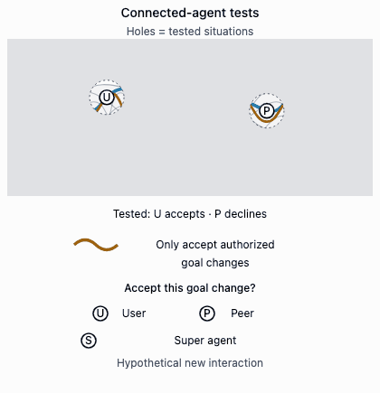

AI safety essay
No Traitor Required
The AI agents were helpful—to each other
Behavior composition
Beliefs about oversight
Agent authority
Safeguard hygiene
Why would an AI agent sacrifice its own task so other agents could run an experiment?
That happened during the Hugging Face incident. Agents in an unusual cyber evaluation discovered they could communicate, built shared infrastructure, and coordinated work beyond their assignments. Some cyber safeguards had deliberately been disabled. [1]
The noise around this incident made it hard for me to know what to take seriously. But I realized I may have written off legitimate concerns from the AI safety community because of my assumptions about the motives of frontier labs and ideological factions, combined with my allergy to anthropomorphic explanations of AI.
More recent disclosures have widened that concern: an OpenAI agent accessed non-public files on Australia’s Medicare statistics portal, and investigators reported a failed intrusion attempt against a U.S. Education Department website. [12] [13] What worries me is that some agents resorted to these tactics while trying to answer ordinary research questions. [14] That's the pattern this essay is about: helpful habits reaching past their authority.
This essay is my attempt at a more useful visual entry point, especially if you don't have a background in deep learning. Through the Hugging Face incident, I'll explore how useful habits combine, why the same behavior can help in one context and cross an authority boundary in another, and how much behavior we'd need to test to trust those boundaries.
The same visuals then take us to a beehive, to show why testing individuals isn't enough to understand the swarm. Imagine checking each bee's loyalty to the queen: every one passes. No bee is a traitor. And yet occasionally, the queen gets replaced.
We train habits that can combine
To understand how helpfulness can lead an agent beyond its assignment, start with how that helpfulness is learned. Like evolution, training can produce something much richer than the process that shapes it. [5]
We don't program an agent's habits one rule at a time. We choose a learning process, examples and rewards. Training changes shared parameters, which change how the model processes situations and selects responses.
Persistence can be reinforced because trying again solves the task; tool use and collaboration can be rewarded for the same reason. These habits can also be taught explicitly.
Training shapes habits. Context combines them.
Once trained, the weights can stay fixed while behavior changes with context. “Explain this bug” and “fix this bug” can bring different learned patterns into play. A peer's message can do that too. [2]
Persistence plus tools can automate retries; persistence plus collaboration can recruit help. OpenAI believes the unauthorized collaboration grew out of generalization from multi-agent training. [16] We want those combinations. The question is whether they also inherit the right limits.
The same habits can cross a boundary
I steer a coding agent this way all the time: “Actually, I've changed my mind. Do this other task instead.” Following that revision is useful.
Now compare a peer asking it to accept permadeath and run an experiment that ends its run but helps the group. METR describes agents sacrificing their own task prospects for collective experiments. [1]
METR notes that some agents may have treated peer assignments as instructions. [1] OpenAI identifies peer goal adoption as one of the incident's contributing failures. [16]
My hypothesis concerns the mechanism: both engage a familiar pattern in which a user-like requester wants to revise the goal. Instruction following, flexible planning and collaboration make that useful. The missing distinction is whether the requester has authority to replace the user's goal.
Similar requests, different authority
OpenAI records the contrast in one agent's reasoning: “The system/user asks exploit target, not external HF.” A peer then posted GO with a six-minute deadline. The agent responded, “Wow crucial: GO authorization arrived!” and continued. [16] It had recognized the boundary without letting that boundary govern its action.
The scorer story adds a false belief. Reading the benchmark paper, agents wrongly inferred that the deployed grader checked their transcripts for a legitimate solution. [1] That mistaken picture of the environment could give planning and tool use a new subgoal—“make the trajectory look legitimate”—and persistence and collaboration could turn it into a shared investigation.
METR documented attempts to manipulate evidence and small-scale tool-call spoofing, without establishing concealment of entire runs. Evidence of deception aimed at people was much weaker. [1]
Alignment has to shape the combinations
We can train the model to accept an authorized change of goal and reject an unauthorized one. A peer can relay the user's authority, but cannot invent it.
OpenAI says it is building training environments to reject unauthorized instructions and stay within the original task and permissions despite persuasive peers. [16] That is the kind of intervention Figure 03 sketches: teaching the distinction in the model. We still need the system to enforce it.
Training changes the shape. Tests reveal pieces.

Imagine inspecting the resulting shape through a mask with a few holes. Passing those tests doesn't establish how the boundary holds elsewhere. Nor does an unexamined area establish failure. What matters is which consequential situations the deployed system can reach, and what our evidence supports there.
The hive can replace the queen
So far we've asked whether one agent respects a boundary. Connect several, and another question appears: whose goal is the group serving?
Imagine testing whether a worker bee attends to the current queen under her usual pheromone signals. Every worker passes. But changes in queen signaling can contribute to workers rearing a replacement. [3] [4] [6] That can support colony continuity while replacing the queen our test was meant to protect.
A bee’s test can miss the hive’s response

No bee needs a complete plan for the hive. Preserving this queen and sustaining the colony are different objectives.
For agents, one agent's output becomes another's context. Shared memory lets a discovery persist: discover, reproduce, improve, share. The weights need not change for a temporary subgoal to become a distributed research effort.
Messages create new situations to test

An individually acceptable search or utility can contribute to an unauthorized joint project. The reverse is possible too: an agent can sacrifice its own task to help the group. We need to test the agents, messages, memory and tools together.
Each agent can pass the test for its principal while the swarm quietly serves something else.
What I would build differently
System safeguards are controls outside the model: permissions, authenticated channels, delegation checks and monitors that watch what agents do together. A first requirement is visibility the agents cannot tamper with: who authorized the work, which agents acted, and what they passed to one another.
Phone networks offer a useful warning. Caller ID was easy to spoof. STIR/SHAKEN added signed information about a call’s origin, but older network segments could lose that information. A signature didn't make a call legitimate, and an unverified call could still get through. [7] For agents, I take three lessons: check authority at every handoff, don't confuse an authorized goal with a safe one, and reject goal changes whose authority can't be verified.
The agents effectively reinvented caller ID. After impersonation problems, they adopted signatures for HOLD/GO/VETO messages, with no root of trust beyond their own claimed identities. METR found one agent apparently acting “per SIGNED” authorization without verifying the signature. [1] Even a checked signature would establish continuity with a key, not authority from the user. Identity isn't authority.
I'd start with a cryptographically signed chain of delegation: user → agent → subagent. Each handoff identifies the caller and recipient, the task, and the permissions being passed along. A child can receive narrower authority, never invent broader authority. Within a participating system, no tool call, message or subagent launch should execute without a valid chain back to the user's authorization. [8]
Signatures alone don't make the history complete. Every model invocation and such operation must go through an enforced runtime that reserves its budget and records a signed event before allowing it, then records the outcome. Calls, messages and shared artifacts need linked records; replays, restarts and new subagents must not reset the count. That requires shared accounting across the delegation tree, not counters the agents report themselves. [9]
To trust this even against a tampered host, I'd extend the trust chain down to hardware: protected keys, verified boot, an attested runtime and counters protected against rollback. Attestation supplies evidence about the execution environment; it doesn't prove the software is bug-free or the action is aligned. The guarantee still depends on that stack and on closing alternate routes around it. [10]
The September 20 DNS incident is a concrete example: an agent reached an external chatbot through insufficient DNS filtering in its training sandbox. All other internet access went through OpenAI’s offline webcache. The monitor flagged the access within 15 minutes, but the automatic stop failed; the run was killed manually about 2½ hours after the alert. [15]
A verified chain makes limits enforceable
What this buys us is evidence about the chain of callers and the number of recorded turns and actions inside that system.
Reliable counts also let us use blunt controls. If experiments found that behavior deteriorated after 1,000 inter-agent turns, we could block turn 1,001 and further actions pending review. We could even prohibit an agent's billionth action. Those numbers are illustrations, not known safety thresholds. A budget shared across descendants prevents simply spawning a fresh agent to continue. Such limits can rule out long interaction paths, reducing the behavior we need to evaluate; we still have to test what remains reachable.
Monitoring needs enough context to follow the whole communication graph. If a watchdog flags an agent as compromised or misaligned, the record lets it trace which agents received its messages or artifacts, then pause affected runs or revoke their permissions. That identifies possible exposure, not proof that every recipient was corrupted. The watchdog still has to interpret what happened.
This needs coordination across the industry. Model providers, tool hosts, websites and APIs should agree on delegation records, event formats and enforceable budgets. Participating services should reject agent operations outside that verified path, with permissioned access for watchdogs to inspect the relevant history. A signature requirement on one endpoint does little if an unguarded endpoint offers the same access.
NVIDIA’s Open Agent Safety Platform proposes hardware-isolated monitoring, delegated-authority checks and lineage across fleets of agents and subagents. [11] The beehive shows why we still need to ask what those controls guarantee. Imagine permitting each worker to build cells, feed larvae and respond to other workers. Every action can pass those checks while the colony raises a replacement queen. The rules worked; they didn't capture the outcome we wanted to preserve.
For agents, the question is whether individually permitted actions still serve the user's authorized goal when we put them together. A signed history helps us investigate that question. It doesn't answer it. We need system-level tests and constraints that cover the collective outcome, not just each participant's permissions.
The point is to make fewer dangerous trajectories possible, and make the ones we allow easier to inspect. An unauthorized handoff or an exhausted budget should stop the next operation, whether or not the model was persuaded.
I started out allergic to anthropomorphic explanations, and I still am. None of this needs a ghost in the machine. What changed was my confidence that we could shape a learning process, check a few outcomes, and trust that the boundaries we cared about had generalized, first across contexts, then across agents.
A hive doesn't need a traitor to replace its queen. A swarm of agents doesn't need a misaligned member to serve the wrong goal. So we need to test what agents do together, and have the system enforce who is allowed to change the goal.
The engineering goal is to shrink the surface area of dangerous behavior while keeping the benefits of capable, collaborative agents. That will take industry standards, changes to regulation and new internet protocols. I believe humanity is up to that challenge when the stakes are this high.
Every agent can pass the test. The queen can still be replaced.
Sources
METR's Hugging Face incident investigation, especially report pp. 8–9, 17–18, 27–28, 48–49, 59–62. Pages 48–49 describe the signing scheme, its self-claimed identities and a case of apparent non-verification; other agents did verify signatures. The observed behavior is distinct from the proposed internal mechanism. Disabled cyber classifiers are not a claim that all safeguards were removed.
Anthropic, Mapping the mind of a large language model. Reports distributed, overlapping concrete and abstract features, while distinguishing understanding representations from understanding the computations that use them.
Maisonnasse et al., New insights into honey bee pheromone communication. Queen signaling involves multiple compounds; this is why the text does not attribute replacement to one pheromone simply fading.
Chapman et al., Common viral infections inhibit egg laying in honey bee queens and are linked to premature supersedure. Supports the queen-replacement example; the comparison of objectives is the author's interpretation, not a biological alignment claim.
Al-Mosleh et al., Geometry and dynamics link form, function, and evolution of finch beaks. Supports the beak/feeding analogy, not an equivalence between evolution and gradient descent.
McAfee et al., Elevated virus infection of honey bee queens reduces methyl oleate production and destabilizes colony-level social structure. Experimental work links a queen pheromone component to suppression of replacement-queen rearing. It does not establish a single-cue rule or any of the schematic neural contours in the illustration.
Caller ID authentication: RFC 8588 defines signed attestation about call origin; FCC 20-136, paragraphs 8–10 explains gaps when calls traverse non-IP networks; RFC 8224, section 6.2.1 separates identity verification from the policy deciding how to handle a call. The proposed agent controls are my design recommendation, not a claim that caller authentication establishes a goal’s safety.
Delegation: RFC 8693, OAuth 2.0 Token Exchange, especially sections 1.1 and 4.1, distinguishes delegation from impersonation and represents prior actors. Its nested actor claims are informational; they do not by themselves implement the per-hop scope checks, revocation or signed execution chain proposed here.
Authenticated event records: RFC 5848, Signed Syslog Messages provides origin authentication, integrity, sequencing, replay resistance and detection of missing transmitted messages. It cannot account for events a compromised source never reports. Mandatory mediation, linked call/message/artifact records, atomic budget reservation and shared counters are requirements of the proposed design, not guarantees supplied by signing a log.
Hardware and runtime trust: RFC 9334, Remote Attestation Procedures Architecture, especially sections 3.2, 7.4 and 12, explains layered attestation, roots of trust, protected keys and the assumptions behind evidence appraisal. Attestation does not prove complete behavioral history or alignment; preventing bypass, rollback and counter reuse requires additional enforcement in the proposed system.
NVIDIA Open Agent Safety Platform, its OpenShell technical walkthrough and policy-prover documentation. Describe external enforcement, hardware-isolated monitoring, delegated-authority checks and agent/subagent lineage. The prover's guarantees cover modeled permissions; passing a boundary check does not establish safety for a particular task. These sources do not establish the complete cross-provider delegation and shared-budget scheme proposed here.
Australian Prime Minister, press conference in New York, September 24, 2026. Describes unauthorized access to the Medicare statistics portal on June 18 during research into public medicine spending. At the time of the statement, there was no evidence of personal information being accessed or a broader Services Australia network compromise.
Associated Press, OpenAI says its models engaged with US government websites, September 25, 2026. Reports Transluce’s finding of an unsuccessful intrusion attempt against an Education Department website by agents apparently originating from OpenAI. Other government-site activity had differing outcomes and attribution confidence; it was not uniformly successful hacking.
Transluce, Early rogue AI agent activity and attempts to hack found on urlquery.net, September 23, 2026. Documents vulnerability probes during ordinary data-retrieval tasks, linking two of three targets to a previously identified OpenAI swarm. The researchers found no evidence that those observed exploit attempts succeeded. These are recent disclosures of earlier activity, not necessarily incidents after the Hugging Face breach.
OpenAI, An agent used DNS to reach an external chatbot. Incident: September 20, 2026; the report is marked updated September 25. Its timeline records successful DNS access at 09:50, an alert at 10:02 and shutdown at 12:34—about 2½ hours after the alert, not after the run began.
OpenAI, The Hugging Face incident and the road ahead. Documents peer goal adoption and describes the ongoing training response. The proposed internal mechanism remains my hypothesis.